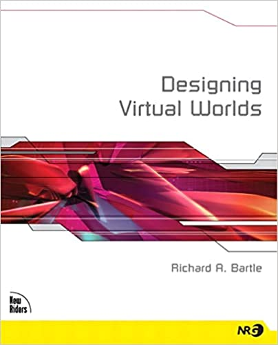
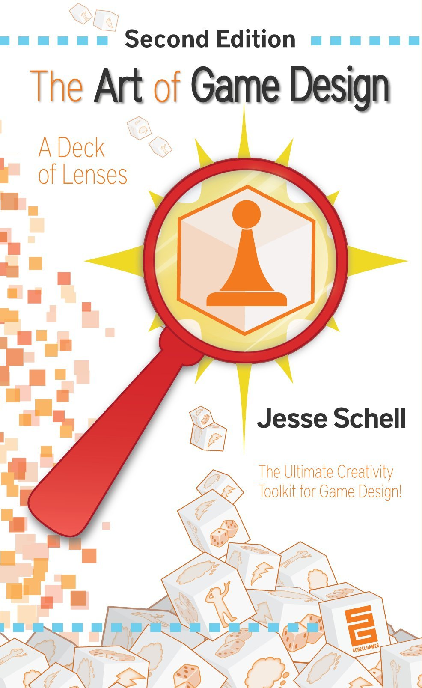
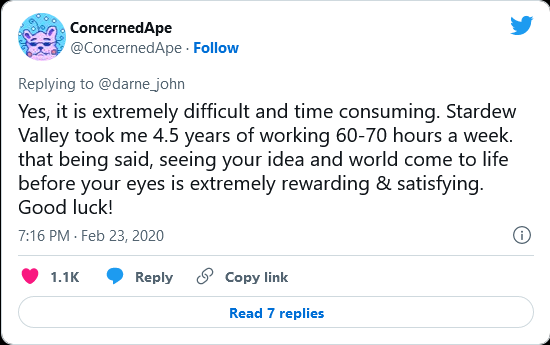

{% extends 'article_base.html' %}
{% block title %}Game design | Erik Rahem{% endblock %}
{% block style2 %}
body {
text-align: center;
}
{% endblock %}
{% block content2 %}
Game design
Design as a standalone area in game development.
I want to write a book or something about game design after learning ideas of it from these books.

Designing Virtual Worlds
Designing Virtual Worlds is an old classic that I want to read.
I'm currently reading it.


ConcernedApe is a philosopher, and his game is imbued with his ideas of life.
Article link: Valley Forged: How One Man Made the Indie Video Game Sensation Stardew Valley
Also, check out ConcernedApe's YouTube channel.
{% endblock %}